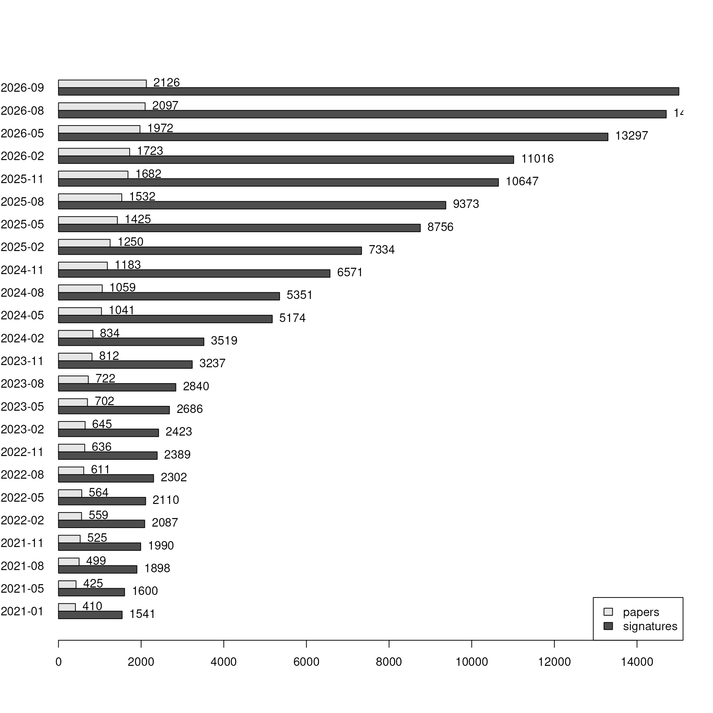
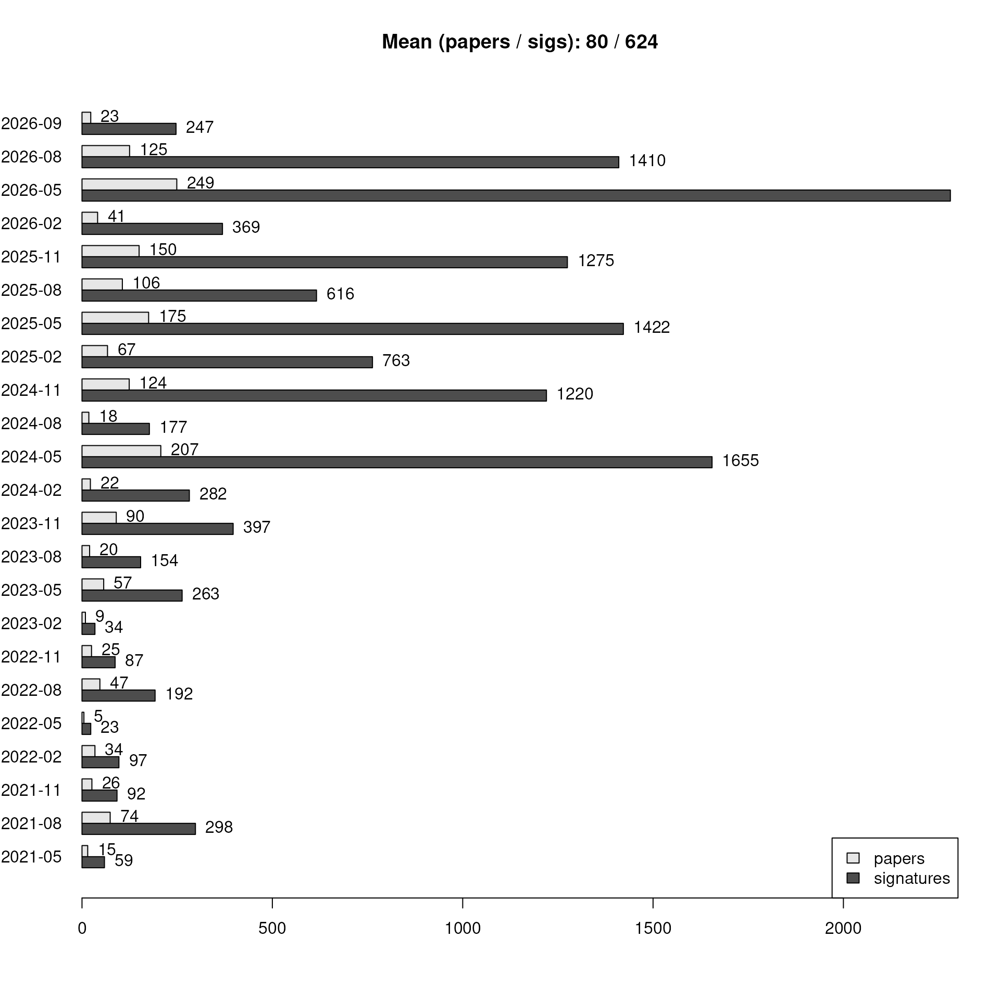
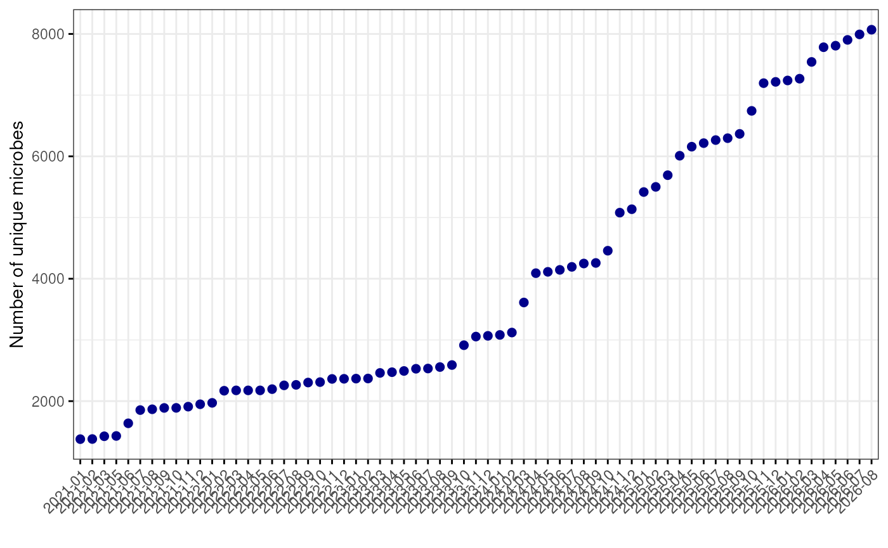
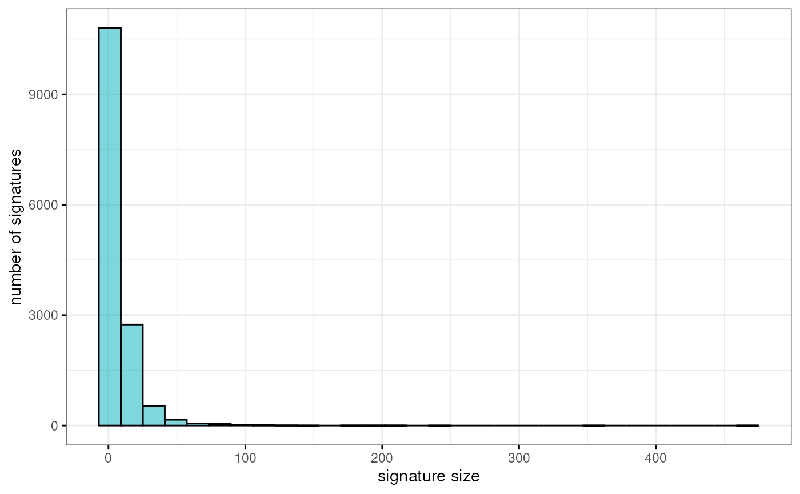
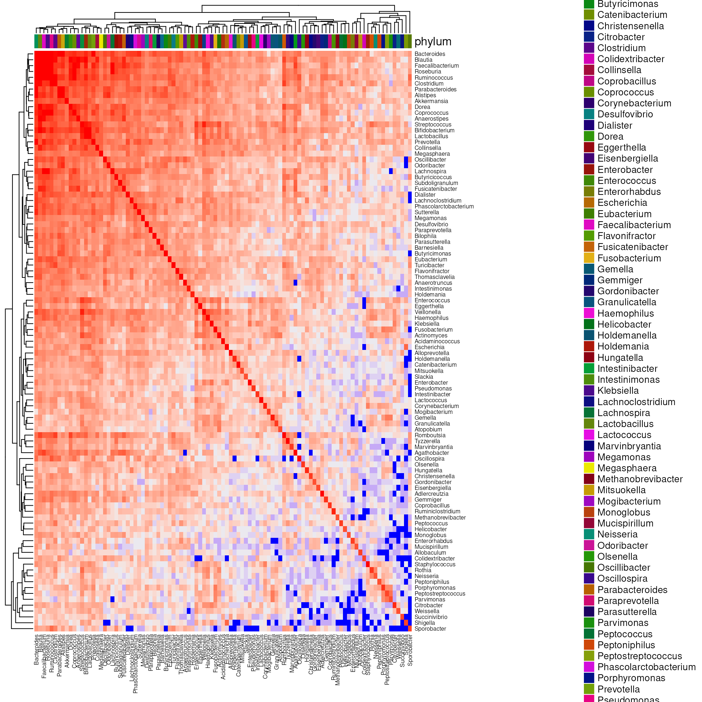
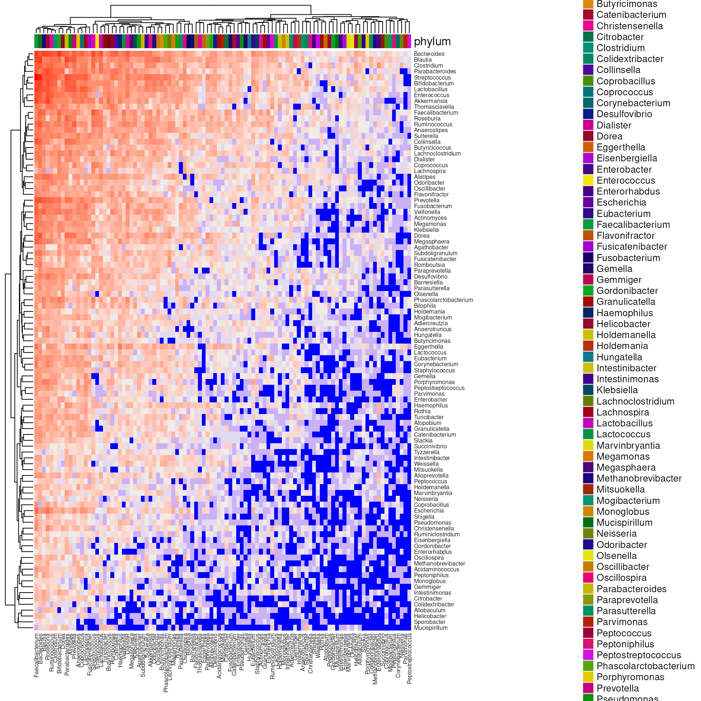
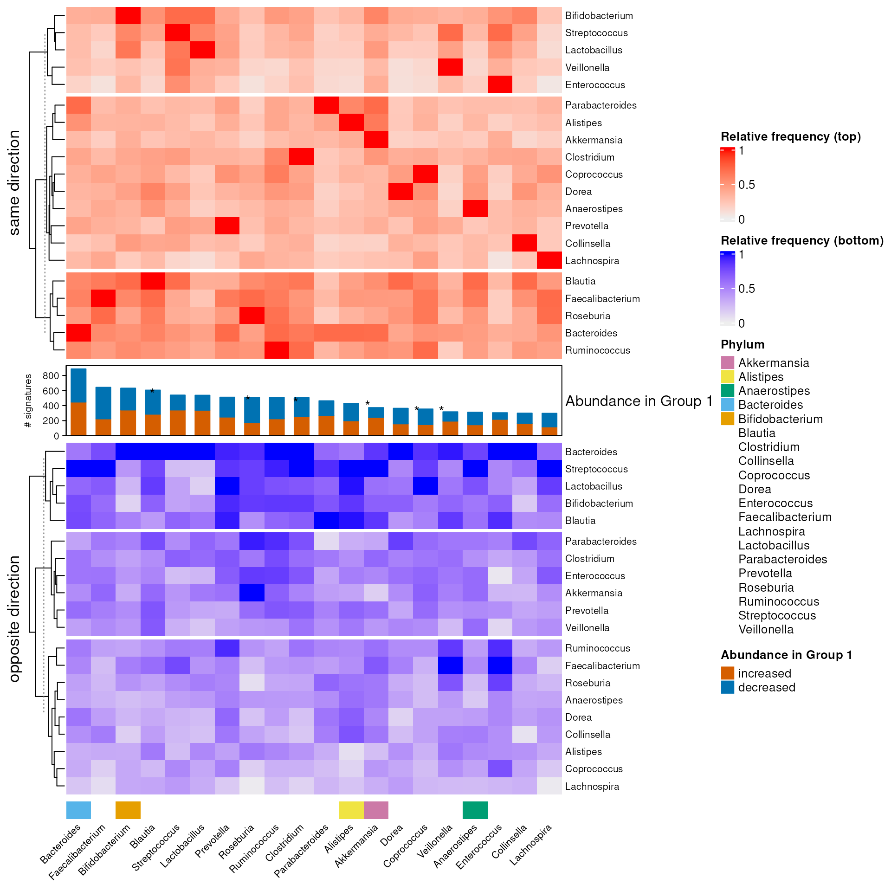

Reading data
Get bulk export from bugsigdb.org:
full.dat <- bugsigdbr::importBugSigDB(version = "devel", cache = FALSE)
dim(full.dat)## [1] 14686 51
colnames(full.dat)## [1] "BSDB ID" "Study"
## [3] "Study design" "PMID"
## [5] "DOI" "URL"
## [7] "Authors list" "Title"
## [9] "Journal" "Year"
## [11] "Keywords" "Experiment"
## [13] "Location of subjects" "Host species"
## [15] "Body site" "UBERON ID"
## [17] "Condition" "EFO ID"
## [19] "Group 0 name" "Group 1 name"
## [21] "Group 1 definition" "Group 0 sample size"
## [23] "Group 1 sample size" "Antibiotics exclusion"
## [25] "Sequencing type" "16S variable region"
## [27] "Sequencing platform" "Data transformation"
## [29] "Statistical test" "Significance threshold"
## [31] "MHT correction" "LDA Score above"
## [33] "Matched on" "Confounders controlled for"
## [35] "Pielou" "Shannon"
## [37] "Chao1" "Simpson"
## [39] "Inverse Simpson" "Richness"
## [41] "Signature page name" "Source"
## [43] "Curated date" "Curator"
## [45] "Revision editor" "Description"
## [47] "Abundance in Group 1" "MetaPhlAn taxon names"
## [49] "NCBI Taxonomy IDs" "State"
## [51] "Reviewer"Stripping illformed entries:
Curation output
Number of papers and signatures curated:
## [1] 2105
nrow(full.dat)## [1] 14686Publication date of the curated papers:
pmids <- pmids[!is.na(pmids)]
pubyear <- pmid2pubyear(pmids)
head(cbind(pmids, pubyear))
tab <- table(pubyear)
tab <- tab[order(as.integer(names(tab)))]
df <- data.frame(year = names(tab), papers = as.integer(tab))
ggbarplot(df, x = "year", y = "papers",
label = TRUE, fill = "steelblue",
ggtheme = theme_bw())Stripping empty signatures:
ind1 <- lengths(full.dat[["MetaPhlAn taxon names"]]) > 0
ind2 <- lengths(full.dat[["NCBI Taxonomy IDs"]]) > 0
dat <- full.dat[ind1 & ind2,]
nrow(dat)## [1] 14686Papers containing only empty UP and DOWN signatures (under curation?):
## character(0)Progress over time:
dat[,"Curated date"] <- as.character(lubridate::dmy(dat[,"Curated date"]))
plotProgressOverTime(dat)
plotProgressOverTime(dat, diff = TRUE)
Stratified by curator:
npc <- stratifyByCurator(dat)
plotCuratorStats(dat, npc)Number of complete and revised signatures: Turned off because it’s way too long these days
Study stats
Study design
spl <- split(dat[["Study"]], dat[["Study design"]])
sds <- lapply(spl, unique)
sort(lengths(sds), decreasing = FALSE)## cross-sectional observational, not case-control,randomized controlled trial
## 1
## laboratory experiment,randomized controlled trial
## 1
## meta-analysis,prospective cohort
## 1
## prospective cohort,laboratory experiment
## 1
## prospective cohort,randomized controlled trial
## 1
## randomized controlled trial,case-control
## 1
## time series / longitudinal observational,cross-sectional observational, not case-control
## 1
## case-control,prospective cohort
## 2
## cross-sectional observational, not case-control,laboratory experiment
## 2
## meta-analysis,laboratory experiment
## 2
## prospective cohort,cross-sectional observational, not case-control
## 2
## time series / longitudinal observational,case-control
## 2
## time series / longitudinal observational,randomized controlled trial
## 2
## laboratory experiment,cross-sectional observational, not case-control
## 3
## laboratory experiment,prospective cohort
## 3
## randomized controlled trial,time series / longitudinal observational
## 3
## time series / longitudinal observational,prospective cohort
## 3
## laboratory experiment,time series / longitudinal observational
## 4
## meta-analysis,case-control
## 4
## randomized controlled trial,laboratory experiment
## 4
## time series / longitudinal observational,laboratory experiment
## 4
## case-control,meta-analysis
## 5
## laboratory experiment,case-control
## 5
## case-control,time series / longitudinal observational
## 7
## case-control,laboratory experiment
## 8
## meta-analysis
## 34
## randomized controlled trial
## 99
## time series / longitudinal observational
## 155
## prospective cohort
## 168
## laboratory experiment
## 223
## cross-sectional observational, not case-control
## 538
## case-control
## 823Experiment stats
Columns of the full dataset that describe experiments:
# Experiment ID
exp.cols <- c("Study", "Experiment")
# Subjects
sub.cols <- c("Host species",
"Location of subjects",
"Body site",
"Condition",
"Antibiotics exclusion",
"Group 0 sample size",
"Group 1 sample size")
# Lab analysis
lab.cols <- c("Sequencing type",
"16S variable region",
"Sequencing platform")
# Statistical analysis
stat.cols <- c("Statistical test",
"MHT correction",
"Significance threshold")
# Alpha diversity
div.cols <- c("Pielou",
"Shannon",
"Chao1",
"Simpson",
"Inverse Simpson",
"Richness")Restrict dataset to experiment information:
Subjects
Number of experiments for the top 10 categories for each subjects column:
## $`Host species`
##
## Homo sapiens Mus musculus Rattus norvegicus
## 7088 938 232
## Sus scrofa domesticus Canis lupus familiaris Not specified
## 140 134 46
## Macaca mulatta Ovis aries Bos taurus
## 33 28 24
## Macaca fascicularis
## 24
##
## $`Location of subjects`
##
## China United States of America Japan
## 3311 1278 349
## South Korea Germany Italy
## 224 214 203
## Spain Denmark Australia
## 200 183 153
## Canada
## 150
##
## $`Body site`
##
## Feces Saliva Vagina
## 5746 451 180
## Subgingival dental plaque Caecum Oral cavity
## 136 91 83
## Colon Nasopharynx Mouth
## 82 80 67
## Rectum
## 61
##
## $Condition
##
## Colorectal cancer Diet Parkinson's disease
## 311 293 235
## Obesity COVID-19 Diet measurement
## 166 127 120
## Response to transplant Response to diet Polycystic ovary syndrome
## 114 111 99
## Constipation
## 91
##
## $`Antibiotics exclusion`
##
## 3 months 1 month
## 1258 1032
## 2 months 6 months
## 383 382
## 2 weeks Recent use of antibiotics
## 271 53
## 1 week currently on antibiotics
## 39 27
## Current use of antibiotics 1 year
## 24 22Proportions instead:
sub.tab <- lapply(sub.cols[1:5], tabCol, df = exps, n = 10, perc = TRUE)
names(sub.tab) <- sub.cols[1:5]
sub.tab## $`Host species`
##
## Homo sapiens Mus musculus Rattus norvegicus
## 0.78700 0.10400 0.02580
## Sus scrofa domesticus Canis lupus familiaris Not specified
## 0.01560 0.01490 0.00511
## Macaca mulatta Ovis aries Bos taurus
## 0.00367 0.00311 0.00267
## Macaca fascicularis
## 0.00267
##
## $`Location of subjects`
##
## China United States of America Japan
## 0.3680 0.1420 0.0388
## South Korea Germany Italy
## 0.0249 0.0238 0.0226
## Spain Denmark Australia
## 0.0222 0.0203 0.0170
## Canada
## 0.0167
##
## $`Body site`
##
## Feces Saliva Vagina
## 0.64100 0.05030 0.02010
## Subgingival dental plaque Caecum Oral cavity
## 0.01520 0.01020 0.00926
## Colon Nasopharynx Mouth
## 0.00915 0.00893 0.00748
## Rectum
## 0.00681
##
## $Condition
##
## Colorectal cancer Diet Parkinson's disease
## 0.0353 0.0333 0.0267
## Obesity COVID-19 Diet measurement
## 0.0189 0.0144 0.0136
## Response to transplant Response to diet Polycystic ovary syndrome
## 0.0130 0.0126 0.0112
## Constipation
## 0.0103
##
## $`Antibiotics exclusion`
##
## 3 months 1 month
## 0.32900 0.27000
## 2 months 6 months
## 0.10000 0.09990
## 2 weeks Recent use of antibiotics
## 0.07090 0.01390
## 1 week currently on antibiotics
## 0.01020 0.00706
## Current use of antibiotics 1 year
## 0.00628 0.00575Sample size:
ssize <- apply(exps[,sub.cols[6:7]], 2, summary)
ssize## Group 0 sample size Group 1 sample size
## Min. 0.0000 1.00000
## 1st Qu. 11.0000 10.00000
## Median 24.0000 21.00000
## Mean 386.5778 61.99038
## 3rd Qu. 50.0000 42.00000
## Max. 308633.0000 10413.00000
## NA's 1736.0000 1728.00000Lab analysis
Number of experiments for the top 10 categories for each lab analysis column:
## $`Sequencing type`
##
## 16S WMS PCR ITS / ITS2 18S
## 7001 1551 84 76 5
##
## $`16S variable region`
##
## 34 4 12 123 45 345 123456789 3
## 3349 1725 364 247 220 150 127 78
## 56 23456789
## 56 55
##
## $`Sequencing platform`
##
## Illumina Roche454
## 7373 341
## Ion Torrent RT-qPCR
## 317 144
## Nanopore MGISEQ-2000
## 79 59
## PacBio Vega (VS)/Revio (RS)/Sequel II Human Intestinal Tract Chip
## 46 31
## DNBSEQ-T7 BGISEQ-500 Sequencing
## 30 21Proportions instead:
lab.tab <- lapply(lab.cols, tabCol, df = exps, n = 10, perc = TRUE)
names(lab.tab) <- lab.cols
lab.tab## $`Sequencing type`
##
## 16S WMS PCR ITS / ITS2 18S
## 0.803000 0.178000 0.009640 0.008720 0.000574
##
## $`16S variable region`
##
## 34 4 12 123 45 345 123456789 3
## 0.51300 0.26400 0.05580 0.03790 0.03370 0.02300 0.01950 0.01200
## 56 23456789
## 0.00859 0.00843
##
## $`Sequencing platform`
##
## Illumina Roche454
## 0.86400 0.03990
## Ion Torrent RT-qPCR
## 0.03710 0.01690
## Nanopore MGISEQ-2000
## 0.00925 0.00691
## PacBio Vega (VS)/Revio (RS)/Sequel II Human Intestinal Tract Chip
## 0.00539 0.00363
## DNBSEQ-T7 BGISEQ-500 Sequencing
## 0.00351 0.00246Statistical analysis
Number of experiments for the top 10 categories for each statistical analysis column:
# Define the columns to analyze
stat.cols <- c("Statistical test", "MHT correction", "Significance threshold")
# Get top 10 counts
stat.tab.count <- lapply(stat.cols, tabCol, df = exps, n = 10)
names(stat.tab.count) <- stat.cols
# Get top 10 proportions
stat.tab.prop <- lapply(stat.cols, tabCol, df = exps, n = 10, perc = TRUE)
names(stat.tab.prop) <- stat.colsTop 10 Counts
count_df <- data.frame(
Name = names(stat.tab.count[["Statistical test"]]),
Count = as.vector(stat.tab.count[["Statistical test"]])
)
DT::datatable(
count_df,
rownames = FALSE,
options = list(pageLength = 10),
caption = "Top categories for: Statistical test"
)
count_df <- data.frame(
Name = names(stat.tab.count[["MHT correction"]]),
Count = as.vector(stat.tab.count[["MHT correction"]])
)
DT::datatable(
count_df,
rownames = FALSE,
options = list(pageLength = 10),
caption = "Top categories for: MHT correction"
)
count_df <- data.frame(
Value = names(stat.tab.count[["Significance threshold"]]),
Count = as.vector(stat.tab.count[["Significance threshold"]])
)
DT::datatable(
count_df,
rownames = FALSE,
options = list(pageLength = 10),
caption = "Top categories for: Significance threshold"
)Top 10 Proportions
prop_df <- data.frame(
Name = names(stat.tab.prop[["Statistical test"]]),
Proportion = as.vector(stat.tab.prop[["Statistical test"]])
)
DT::datatable(
prop_df,
rownames = FALSE,
options = list(pageLength = 10),
caption = "Top proportions for: Statistical test"
)
prop_df <- data.frame(
Name = names(stat.tab.prop[["MHT correction"]]),
Proportion = as.vector(stat.tab.prop[["MHT correction"]])
)
DT::datatable(
prop_df,
rownames = FALSE,
options = list(pageLength = 10),
caption = "Top proportions for: MHT correction"
)
prop_df <- data.frame(
Value = names(stat.tab.prop[["Significance threshold"]]),
Proportion = as.vector(stat.tab.prop[["Significance threshold"]])
)
DT::datatable(
prop_df,
rownames = FALSE,
options = list(pageLength = 10),
caption = "Top proportions for: Significance threshold"
)Alpha diversity
Overall distribution:
apply(exps[,div.cols], 2, table)## Pielou Shannon Chao1 Simpson Inverse Simpson Richness
## decreased 92 985 606 339 82 634
## increased 67 735 440 210 60 454
## unchanged 344 2854 1413 1131 279 1442Correspondence of Shannon diversity and Richness:
table(exps$Shannon, exps$Richness)##
## decreased increased unchanged
## decreased 354 15 80
## increased 14 225 70
## unchanged 132 117 1161Conditions with consistently increased or decreased alpha diversity:
tabDiv(exps, "Shannon", "Condition")## increased decreased
## Pulmonary tuberculosis 4 29
## Gastric cancer 6 21
## Polycystic ovary syndrome 4 19
## COVID-19 11 24
## Diet 19 31
## Periodontitis 15 3
## HIV infection 1 12
## Human papilloma virus infection 12 1
## Ulcerative colitis 1 12
## Colorectal cancer 20 30
## Crohn's disease 0 10
## Multiple sclerosis 2 12
## Obesity 7 17
## Systemic inflammatory response syndrome 5 15
## Alzheimer's disease 2 11
## Chronic constipation 9 0
## Clostridium difficile infection 10 1
## Gingivitis 1 9
## Non-alcoholic fatty liver disease 5 13
## Pancreatic carcinoma 9 1
## Smoking behaviour measurement 8 0
## Age 6 13
## Dry eye syndrome 1 8
## Heart failure 0 7
## Lung cancer 2 9
## Mycobacterium tuberculosis 7 0
## Atopic eczema 5 11
## Autism spectrum disorder 7 1
## Cesarean section 6 0
## Graves disease 1 7
## Mastitis 0 6
## Parkinson's disease 20 14
## Response to allogeneic hematopoietic stem cell transplant 0 6
## Spontaneous preterm birth 13 7
## Acute pancreatitis 0 5
## Aging 2 7
## Bronchiectasis 0 5
## Cystic fibrosis 0 5
## Epilepsy 5 0
## Helminthiasis 5 0
## Inflammatory bowel disease 0 5
## Oxygen 5 0
## Response to antibiotic 2 7
## Species design 10 15
## Type II diabetes mellitus 10 5
## Urinary tract infection 1 6
## Acute lymphoblastic leukemia 0 4
## Body mass index 0 4
## Cervical cancer 5 1
## Chronic kidney disease 2 6
## Chronic periodontitis 4 0
## Colitis 4 0
## Constipation 7 3
## Depressive disorder 0 4
## Ethnic group 3 7
## Food allergy 6 2
## Gestational diabetes 4 0
## Human immunodeficiency virus 0 4
## SARS-CoV-2-related disease 0 4
## Alcohol drinking 3 0
## Antimicrobial agent 7 10
## Atopic asthma 4 1
## Birth measurement 3 0
## Disease recurrence 0 3
## Endometrial cancer 5 2
## Environmental exposure measurement 3 0
## Extraction protocol 23 26
## Hematopoietic stem cell 0 3
## High fat diet 4 1
## Hypertension 7 4
## Hypothyroidism 0 3
## Lifestyle measurement 5 2
## Male homosexuality 3 0
## Non-alcoholic steatohepatitis 1 4
## Response to antiviral drug 2 5
## Schizophrenia 1 4
## Traditional Chinese medicine type 2 5
## Tuberculosis 2 5
## Acne 0 2
## Age at assessment 3 1
## Breed 0 2
## Cervical glandular intraepithelial neoplasia 2 0
## Cognitive impairment 1 3
## Compound based treatment 0 2
## Dental caries 2 0
## Diffuse large B-cell lymphoma 0 2
## Eczema 0 2
## Environmental factor 7 5
## Esophageal adenocarcinoma 0 2
## Female infertility 2 0
## Hepatic steatosis 0 2
## Iron biomarker measurement 1 3
## Irritable bowel syndrome 5 7
## Milk allergic reaction 2 0
## Papillary thyroid carcinoma 2 0
## Phenotype 2 0
## Phenylketonuria 1 3
## Population 5 7
## Pregnancy 4 2
## Reproductive behaviour measurement 2 0
## Response to anti-tuberculosis drug 8 10
## Response to immunochemotherapy 3 1
## Response to opioid 3 1
## Sampling site 3 1
## Simian immunodeficiency virus infection 0 2
## Sleep duration 3 1
## Small for gestational age 0 2
## Smoking status measurement 2 0
## Squamous cell carcinoma 2 0
## Streptococcus pneumoniae 0 2
## Stroke 2 0
## Acute respiratory failure 6 5
## Age-related macular degeneration 0 1
## Air pollution 7 6
## Anxiety disorder 0 1
## Attention deficit-hyperactivity disorder 2 1
## Breast cancer 4 5
## Breastfeeding duration 2 3
## Chronic fatigue syndrome 0 1
## Chronic hepatitis B virus infection 0 1
## Chronic obstructive pulmonary disease 3 2
## Clinical treatment 1 2
## Coccidiosis 0 1
## Colon carcinoma 0 1
## Delivery method 3 4
## Diabetes mellitus 0 1
## Diarrhea 3 4
## Endometriosis 2 3
## Esophageal cancer 1 2
## Esophageal squamous cell carcinoma 1 0
## Estradiol measurement 1 2
## Fasting 0 1
## Fungal infectious disease 2 1
## Glaucoma 4 5
## Hepatocellular carcinoma 4 5
## Hypertrophy 1 0
## Infant 1 0
## Liver enzyme measurement 0 1
## Major depressive disorder 0 1
## Maternal milk 2 1
## Metastatic colorectal cancer 1 2
## Myocardial infarction 1 2
## Obstructive sleep apnea 0 1
## Oral cavity carcinoma 0 1
## Oral squamous cell carcinoma 3 2
## Ovarian cancer 4 3
## Peri-Implantitis 2 1
## Pneumonia 1 2
## Prediabetes syndrome 0 1
## Premature birth 1 0
## Prostate cancer 0 1
## Psoriasis 1 0
## Respiratory Syncytial Virus Infection 0 1
## Respiratory tract infectious disease 0 1
## Response to stress 1 0
## Response to transplant 10 9
## Response to vaccine 1 2
## Sample treatment protocol 1 0
## Sampling time 4 3
## Sleep Disorder 1 0
## Social interaction measurement 2 1
## Socioeconomic status 3 4
## Stimulus or stress design 0 1
## Timepoint 1 0
## Treatment 4 3
## Type I diabetes mellitus 0 1
## Vesicle membrane 3 2
## Vitiligo 0 1
## Abnormal stool composition 0 0
## Acute myeloid leukemia 1 1
## Alcohol use disorder measurement 2 2
## Arthritis 0 0
## Asthma 3 3
## Biological sex 1 1
## Bipolar disorder 0 0
## Celiac disease 0 0
## Chlamydia trachomatis 2 2
## Colorectal adenoma 2 2
## Contraception 0 0
## COVID-19 symptoms measurement 0 0
## Diet measurement 0 0
## Disease progression measurement 0 0
## Exposure 1 1
## Gastric adenocarcinoma 0 0
## Glioma 0 0
## Head and neck squamous cell carcinoma 0 0
## Health study participation 3 3
## Hepatic fibrosis 0 0
## HIV mother to child transmission 0 0
## Hydroxyproline measurement 1 1
## Hypoxia 4 4
## Ischemic stroke 0 0
## Lactose intolerance 0 0
## Lung transplantation 2 2
## Metabolic process 0 0
## Neurodevelopmental delay 0 0
## Obsessive-compulsive disorder 0 0
## Oral lichen planus 3 3
## Oral mucositis 2 2
## Oxalate measurement 1 1
## Pathological complete response 0 0
## Postpartum 0 0
## Psoriasis vulgaris 0 0
## Response to diet 5 5
## Response to dietary antigen 0 0
## Response to ketogenic diet 2 2
## Rheumatoid arthritis 5 5
## Sample collection protocol 0 0
## SARS coronavirus 0 0
## Smoking behavior 10 10
## Social deprivation,Psychological measurement 0 0
## Transplant outcome measurement 0 0
## Treatment outcome measurement 1 1
## Viral load 0 0
## Waist circumference 0 0
## unchanged
## Pulmonary tuberculosis 20
## Gastric cancer 27
## Polycystic ovary syndrome 30
## COVID-19 50
## Diet 74
## Periodontitis 16
## HIV infection 27
## Human papilloma virus infection 28
## Ulcerative colitis 5
## Colorectal cancer 84
## Crohn's disease 8
## Multiple sclerosis 32
## Obesity 71
## Systemic inflammatory response syndrome 4
## Alzheimer's disease 30
## Chronic constipation 12
## Clostridium difficile infection 1
## Gingivitis 13
## Non-alcoholic fatty liver disease 19
## Pancreatic carcinoma 6
## Smoking behaviour measurement 9
## Age 10
## Dry eye syndrome 14
## Heart failure 2
## Lung cancer 8
## Mycobacterium tuberculosis 5
## Atopic eczema 72
## Autism spectrum disorder 12
## Cesarean section 16
## Graves disease 7
## Mastitis 0
## Parkinson's disease 95
## Response to allogeneic hematopoietic stem cell transplant 0
## Spontaneous preterm birth 6
## Acute pancreatitis 3
## Aging 3
## Bronchiectasis 0
## Cystic fibrosis 3
## Epilepsy 5
## Helminthiasis 8
## Inflammatory bowel disease 1
## Oxygen 0
## Response to antibiotic 22
## Species design 13
## Type II diabetes mellitus 41
## Urinary tract infection 11
## Acute lymphoblastic leukemia 10
## Body mass index 4
## Cervical cancer 9
## Chronic kidney disease 11
## Chronic periodontitis 8
## Colitis 2
## Constipation 10
## Depressive disorder 7
## Ethnic group 6
## Food allergy 19
## Gestational diabetes 37
## Human immunodeficiency virus 6
## SARS-CoV-2-related disease 5
## Alcohol drinking 2
## Antimicrobial agent 25
## Atopic asthma 7
## Birth measurement 4
## Disease recurrence 7
## Endometrial cancer 3
## Environmental exposure measurement 4
## Extraction protocol 21
## Hematopoietic stem cell 3
## High fat diet 7
## Hypertension 9
## Hypothyroidism 4
## Lifestyle measurement 26
## Male homosexuality 6
## Non-alcoholic steatohepatitis 4
## Response to antiviral drug 17
## Schizophrenia 24
## Traditional Chinese medicine type 8
## Tuberculosis 0
## Acne 3
## Age at assessment 1
## Breed 7
## Cervical glandular intraepithelial neoplasia 9
## Cognitive impairment 14
## Compound based treatment 5
## Dental caries 4
## Diffuse large B-cell lymphoma 9
## Eczema 10
## Environmental factor 19
## Esophageal adenocarcinoma 4
## Female infertility 3
## Hepatic steatosis 4
## Iron biomarker measurement 2
## Irritable bowel syndrome 29
## Milk allergic reaction 5
## Papillary thyroid carcinoma 10
## Phenotype 19
## Phenylketonuria 4
## Population 28
## Pregnancy 9
## Reproductive behaviour measurement 3
## Response to anti-tuberculosis drug 13
## Response to immunochemotherapy 3
## Response to opioid 2
## Sampling site 7
## Simian immunodeficiency virus infection 9
## Sleep duration 2
## Small for gestational age 6
## Smoking status measurement 4
## Squamous cell carcinoma 4
## Streptococcus pneumoniae 4
## Stroke 16
## Acute respiratory failure 0
## Age-related macular degeneration 4
## Air pollution 3
## Anxiety disorder 7
## Attention deficit-hyperactivity disorder 6
## Breast cancer 31
## Breastfeeding duration 5
## Chronic fatigue syndrome 4
## Chronic hepatitis B virus infection 5
## Chronic obstructive pulmonary disease 5
## Clinical treatment 12
## Coccidiosis 4
## Colon carcinoma 10
## Delivery method 13
## Diabetes mellitus 9
## Diarrhea 15
## Endometriosis 14
## Esophageal cancer 2
## Esophageal squamous cell carcinoma 5
## Estradiol measurement 2
## Fasting 4
## Fungal infectious disease 4
## Glaucoma 6
## Hepatocellular carcinoma 10
## Hypertrophy 4
## Infant 4
## Liver enzyme measurement 5
## Major depressive disorder 6
## Maternal milk 2
## Metastatic colorectal cancer 3
## Myocardial infarction 8
## Obstructive sleep apnea 11
## Oral cavity carcinoma 7
## Oral squamous cell carcinoma 3
## Ovarian cancer 35
## Peri-Implantitis 2
## Pneumonia 3
## Prediabetes syndrome 5
## Premature birth 6
## Prostate cancer 9
## Psoriasis 14
## Respiratory Syncytial Virus Infection 5
## Respiratory tract infectious disease 5
## Response to stress 9
## Response to transplant 34
## Response to vaccine 5
## Sample treatment protocol 4
## Sampling time 7
## Sleep Disorder 4
## Social interaction measurement 6
## Socioeconomic status 8
## Stimulus or stress design 4
## Timepoint 5
## Treatment 6
## Type I diabetes mellitus 10
## Vesicle membrane 1
## Vitiligo 4
## Abnormal stool composition 6
## Acute myeloid leukemia 7
## Alcohol use disorder measurement 4
## Arthritis 6
## Asthma 17
## Biological sex 6
## Bipolar disorder 5
## Celiac disease 6
## Chlamydia trachomatis 2
## Colorectal adenoma 20
## Contraception 5
## COVID-19 symptoms measurement 5
## Diet measurement 60
## Disease progression measurement 5
## Exposure 4
## Gastric adenocarcinoma 8
## Glioma 5
## Head and neck squamous cell carcinoma 8
## Health study participation 36
## Hepatic fibrosis 5
## HIV mother to child transmission 8
## Hydroxyproline measurement 3
## Hypoxia 0
## Ischemic stroke 5
## Lactose intolerance 5
## Lung transplantation 2
## Metabolic process 7
## Neurodevelopmental delay 6
## Obsessive-compulsive disorder 5
## Oral lichen planus 4
## Oral mucositis 3
## Oxalate measurement 8
## Pathological complete response 7
## Postpartum 7
## Psoriasis vulgaris 14
## Response to diet 46
## Response to dietary antigen 6
## Response to ketogenic diet 3
## Rheumatoid arthritis 15
## Sample collection protocol 9
## SARS coronavirus 6
## Smoking behavior 26
## Social deprivation,Psychological measurement 12
## Transplant outcome measurement 11
## Treatment outcome measurement 3
## Viral load 6
## Waist circumference 5
tabDiv(exps, "Shannon", "Condition", perc = TRUE)## increased decreased
## Pulmonary tuberculosis 0.075 0.550
## Gastric cancer 0.110 0.390
## Polycystic ovary syndrome 0.075 0.360
## COVID-19 0.130 0.280
## Diet 0.150 0.250
## Periodontitis 0.440 0.088
## HIV infection 0.025 0.300
## Human papilloma virus infection 0.290 0.024
## Ulcerative colitis 0.056 0.670
## Colorectal cancer 0.150 0.220
## Crohn's disease 0.000 0.560
## Multiple sclerosis 0.043 0.260
## Obesity 0.074 0.180
## Systemic inflammatory response syndrome 0.210 0.620
## Alzheimer's disease 0.047 0.260
## Chronic constipation 0.430 0.000
## Clostridium difficile infection 0.830 0.083
## Gingivitis 0.043 0.390
## Non-alcoholic fatty liver disease 0.140 0.350
## Pancreatic carcinoma 0.560 0.062
## Smoking behaviour measurement 0.470 0.000
## Age 0.210 0.450
## Dry eye syndrome 0.043 0.350
## Heart failure 0.000 0.780
## Lung cancer 0.110 0.470
## Mycobacterium tuberculosis 0.580 0.000
## Atopic eczema 0.057 0.120
## Autism spectrum disorder 0.350 0.050
## Cesarean section 0.270 0.000
## Graves disease 0.067 0.470
## Mastitis 0.000 1.000
## Parkinson's disease 0.160 0.110
## Response to allogeneic hematopoietic stem cell transplant 0.000 1.000
## Spontaneous preterm birth 0.500 0.270
## Acute pancreatitis 0.000 0.620
## Aging 0.170 0.580
## Bronchiectasis 0.000 1.000
## Cystic fibrosis 0.000 0.620
## Epilepsy 0.500 0.000
## Helminthiasis 0.380 0.000
## Inflammatory bowel disease 0.000 0.830
## Oxygen 1.000 0.000
## Response to antibiotic 0.065 0.230
## Species design 0.260 0.390
## Type II diabetes mellitus 0.180 0.089
## Urinary tract infection 0.056 0.330
## Acute lymphoblastic leukemia 0.000 0.290
## Body mass index 0.000 0.500
## Cervical cancer 0.330 0.067
## Chronic kidney disease 0.110 0.320
## Chronic periodontitis 0.330 0.000
## Colitis 0.670 0.000
## Constipation 0.350 0.150
## Depressive disorder 0.000 0.360
## Ethnic group 0.190 0.440
## Food allergy 0.220 0.074
## Gestational diabetes 0.098 0.000
## Human immunodeficiency virus 0.000 0.400
## SARS-CoV-2-related disease 0.000 0.440
## Alcohol drinking 0.600 0.000
## Antimicrobial agent 0.170 0.240
## Atopic asthma 0.330 0.083
## Birth measurement 0.430 0.000
## Disease recurrence 0.000 0.300
## Endometrial cancer 0.500 0.200
## Environmental exposure measurement 0.430 0.000
## Extraction protocol 0.330 0.370
## Hematopoietic stem cell 0.000 0.500
## High fat diet 0.330 0.083
## Hypertension 0.350 0.200
## Hypothyroidism 0.000 0.430
## Lifestyle measurement 0.150 0.061
## Male homosexuality 0.330 0.000
## Non-alcoholic steatohepatitis 0.110 0.440
## Response to antiviral drug 0.083 0.210
## Schizophrenia 0.034 0.140
## Traditional Chinese medicine type 0.130 0.330
## Tuberculosis 0.290 0.710
## Acne 0.000 0.400
## Age at assessment 0.600 0.200
## Breed 0.000 0.220
## Cervical glandular intraepithelial neoplasia 0.180 0.000
## Cognitive impairment 0.056 0.170
## Compound based treatment 0.000 0.290
## Dental caries 0.330 0.000
## Diffuse large B-cell lymphoma 0.000 0.180
## Eczema 0.000 0.170
## Environmental factor 0.230 0.160
## Esophageal adenocarcinoma 0.000 0.330
## Female infertility 0.400 0.000
## Hepatic steatosis 0.000 0.330
## Iron biomarker measurement 0.170 0.500
## Irritable bowel syndrome 0.120 0.170
## Milk allergic reaction 0.290 0.000
## Papillary thyroid carcinoma 0.170 0.000
## Phenotype 0.095 0.000
## Phenylketonuria 0.120 0.380
## Population 0.120 0.180
## Pregnancy 0.270 0.130
## Reproductive behaviour measurement 0.400 0.000
## Response to anti-tuberculosis drug 0.260 0.320
## Response to immunochemotherapy 0.430 0.140
## Response to opioid 0.500 0.170
## Sampling site 0.270 0.091
## Simian immunodeficiency virus infection 0.000 0.180
## Sleep duration 0.500 0.170
## Small for gestational age 0.000 0.250
## Smoking status measurement 0.330 0.000
## Squamous cell carcinoma 0.330 0.000
## Streptococcus pneumoniae 0.000 0.330
## Stroke 0.110 0.000
## Acute respiratory failure 0.550 0.450
## Age-related macular degeneration 0.000 0.200
## Air pollution 0.440 0.380
## Anxiety disorder 0.000 0.120
## Attention deficit-hyperactivity disorder 0.220 0.110
## Breast cancer 0.100 0.120
## Breastfeeding duration 0.200 0.300
## Chronic fatigue syndrome 0.000 0.200
## Chronic hepatitis B virus infection 0.000 0.170
## Chronic obstructive pulmonary disease 0.300 0.200
## Clinical treatment 0.067 0.130
## Coccidiosis 0.000 0.200
## Colon carcinoma 0.000 0.091
## Delivery method 0.150 0.200
## Diabetes mellitus 0.000 0.100
## Diarrhea 0.140 0.180
## Endometriosis 0.110 0.160
## Esophageal cancer 0.200 0.400
## Esophageal squamous cell carcinoma 0.170 0.000
## Estradiol measurement 0.200 0.400
## Fasting 0.000 0.200
## Fungal infectious disease 0.290 0.140
## Glaucoma 0.270 0.330
## Hepatocellular carcinoma 0.210 0.260
## Hypertrophy 0.200 0.000
## Infant 0.200 0.000
## Liver enzyme measurement 0.000 0.170
## Major depressive disorder 0.000 0.140
## Maternal milk 0.400 0.200
## Metastatic colorectal cancer 0.170 0.330
## Myocardial infarction 0.091 0.180
## Obstructive sleep apnea 0.000 0.083
## Oral cavity carcinoma 0.000 0.120
## Oral squamous cell carcinoma 0.380 0.250
## Ovarian cancer 0.095 0.071
## Peri-Implantitis 0.400 0.200
## Pneumonia 0.170 0.330
## Prediabetes syndrome 0.000 0.170
## Premature birth 0.140 0.000
## Prostate cancer 0.000 0.100
## Psoriasis 0.067 0.000
## Respiratory Syncytial Virus Infection 0.000 0.170
## Respiratory tract infectious disease 0.000 0.170
## Response to stress 0.100 0.000
## Response to transplant 0.190 0.170
## Response to vaccine 0.120 0.250
## Sample treatment protocol 0.200 0.000
## Sampling time 0.290 0.210
## Sleep Disorder 0.200 0.000
## Social interaction measurement 0.220 0.110
## Socioeconomic status 0.200 0.270
## Stimulus or stress design 0.000 0.200
## Timepoint 0.170 0.000
## Treatment 0.310 0.230
## Type I diabetes mellitus 0.000 0.091
## Vesicle membrane 0.500 0.330
## Vitiligo 0.000 0.200
## Abnormal stool composition 0.000 0.000
## Acute myeloid leukemia 0.110 0.110
## Alcohol use disorder measurement 0.250 0.250
## Arthritis 0.000 0.000
## Asthma 0.130 0.130
## Biological sex 0.120 0.120
## Bipolar disorder 0.000 0.000
## Celiac disease 0.000 0.000
## Chlamydia trachomatis 0.330 0.330
## Colorectal adenoma 0.083 0.083
## Contraception 0.000 0.000
## COVID-19 symptoms measurement 0.000 0.000
## Diet measurement 0.000 0.000
## Disease progression measurement 0.000 0.000
## Exposure 0.170 0.170
## Gastric adenocarcinoma 0.000 0.000
## Glioma 0.000 0.000
## Head and neck squamous cell carcinoma 0.000 0.000
## Health study participation 0.071 0.071
## Hepatic fibrosis 0.000 0.000
## HIV mother to child transmission 0.000 0.000
## Hydroxyproline measurement 0.200 0.200
## Hypoxia 0.500 0.500
## Ischemic stroke 0.000 0.000
## Lactose intolerance 0.000 0.000
## Lung transplantation 0.330 0.330
## Metabolic process 0.000 0.000
## Neurodevelopmental delay 0.000 0.000
## Obsessive-compulsive disorder 0.000 0.000
## Oral lichen planus 0.300 0.300
## Oral mucositis 0.290 0.290
## Oxalate measurement 0.100 0.100
## Pathological complete response 0.000 0.000
## Postpartum 0.000 0.000
## Psoriasis vulgaris 0.000 0.000
## Response to diet 0.089 0.089
## Response to dietary antigen 0.000 0.000
## Response to ketogenic diet 0.290 0.290
## Rheumatoid arthritis 0.200 0.200
## Sample collection protocol 0.000 0.000
## SARS coronavirus 0.000 0.000
## Smoking behavior 0.220 0.220
## Social deprivation,Psychological measurement 0.000 0.000
## Transplant outcome measurement 0.000 0.000
## Treatment outcome measurement 0.200 0.200
## Viral load 0.000 0.000
## Waist circumference 0.000 0.000
## unchanged
## Pulmonary tuberculosis 0.380
## Gastric cancer 0.500
## Polycystic ovary syndrome 0.570
## COVID-19 0.590
## Diet 0.600
## Periodontitis 0.470
## HIV infection 0.680
## Human papilloma virus infection 0.680
## Ulcerative colitis 0.280
## Colorectal cancer 0.630
## Crohn's disease 0.440
## Multiple sclerosis 0.700
## Obesity 0.750
## Systemic inflammatory response syndrome 0.170
## Alzheimer's disease 0.700
## Chronic constipation 0.570
## Clostridium difficile infection 0.083
## Gingivitis 0.570
## Non-alcoholic fatty liver disease 0.510
## Pancreatic carcinoma 0.380
## Smoking behaviour measurement 0.530
## Age 0.340
## Dry eye syndrome 0.610
## Heart failure 0.220
## Lung cancer 0.420
## Mycobacterium tuberculosis 0.420
## Atopic eczema 0.820
## Autism spectrum disorder 0.600
## Cesarean section 0.730
## Graves disease 0.470
## Mastitis 0.000
## Parkinson's disease 0.740
## Response to allogeneic hematopoietic stem cell transplant 0.000
## Spontaneous preterm birth 0.230
## Acute pancreatitis 0.380
## Aging 0.250
## Bronchiectasis 0.000
## Cystic fibrosis 0.380
## Epilepsy 0.500
## Helminthiasis 0.620
## Inflammatory bowel disease 0.170
## Oxygen 0.000
## Response to antibiotic 0.710
## Species design 0.340
## Type II diabetes mellitus 0.730
## Urinary tract infection 0.610
## Acute lymphoblastic leukemia 0.710
## Body mass index 0.500
## Cervical cancer 0.600
## Chronic kidney disease 0.580
## Chronic periodontitis 0.670
## Colitis 0.330
## Constipation 0.500
## Depressive disorder 0.640
## Ethnic group 0.380
## Food allergy 0.700
## Gestational diabetes 0.900
## Human immunodeficiency virus 0.600
## SARS-CoV-2-related disease 0.560
## Alcohol drinking 0.400
## Antimicrobial agent 0.600
## Atopic asthma 0.580
## Birth measurement 0.570
## Disease recurrence 0.700
## Endometrial cancer 0.300
## Environmental exposure measurement 0.570
## Extraction protocol 0.300
## Hematopoietic stem cell 0.500
## High fat diet 0.580
## Hypertension 0.450
## Hypothyroidism 0.570
## Lifestyle measurement 0.790
## Male homosexuality 0.670
## Non-alcoholic steatohepatitis 0.440
## Response to antiviral drug 0.710
## Schizophrenia 0.830
## Traditional Chinese medicine type 0.530
## Tuberculosis 0.000
## Acne 0.600
## Age at assessment 0.200
## Breed 0.780
## Cervical glandular intraepithelial neoplasia 0.820
## Cognitive impairment 0.780
## Compound based treatment 0.710
## Dental caries 0.670
## Diffuse large B-cell lymphoma 0.820
## Eczema 0.830
## Environmental factor 0.610
## Esophageal adenocarcinoma 0.670
## Female infertility 0.600
## Hepatic steatosis 0.670
## Iron biomarker measurement 0.330
## Irritable bowel syndrome 0.710
## Milk allergic reaction 0.710
## Papillary thyroid carcinoma 0.830
## Phenotype 0.900
## Phenylketonuria 0.500
## Population 0.700
## Pregnancy 0.600
## Reproductive behaviour measurement 0.600
## Response to anti-tuberculosis drug 0.420
## Response to immunochemotherapy 0.430
## Response to opioid 0.330
## Sampling site 0.640
## Simian immunodeficiency virus infection 0.820
## Sleep duration 0.330
## Small for gestational age 0.750
## Smoking status measurement 0.670
## Squamous cell carcinoma 0.670
## Streptococcus pneumoniae 0.670
## Stroke 0.890
## Acute respiratory failure 0.000
## Age-related macular degeneration 0.800
## Air pollution 0.190
## Anxiety disorder 0.880
## Attention deficit-hyperactivity disorder 0.670
## Breast cancer 0.780
## Breastfeeding duration 0.500
## Chronic fatigue syndrome 0.800
## Chronic hepatitis B virus infection 0.830
## Chronic obstructive pulmonary disease 0.500
## Clinical treatment 0.800
## Coccidiosis 0.800
## Colon carcinoma 0.910
## Delivery method 0.650
## Diabetes mellitus 0.900
## Diarrhea 0.680
## Endometriosis 0.740
## Esophageal cancer 0.400
## Esophageal squamous cell carcinoma 0.830
## Estradiol measurement 0.400
## Fasting 0.800
## Fungal infectious disease 0.570
## Glaucoma 0.400
## Hepatocellular carcinoma 0.530
## Hypertrophy 0.800
## Infant 0.800
## Liver enzyme measurement 0.830
## Major depressive disorder 0.860
## Maternal milk 0.400
## Metastatic colorectal cancer 0.500
## Myocardial infarction 0.730
## Obstructive sleep apnea 0.920
## Oral cavity carcinoma 0.880
## Oral squamous cell carcinoma 0.380
## Ovarian cancer 0.830
## Peri-Implantitis 0.400
## Pneumonia 0.500
## Prediabetes syndrome 0.830
## Premature birth 0.860
## Prostate cancer 0.900
## Psoriasis 0.930
## Respiratory Syncytial Virus Infection 0.830
## Respiratory tract infectious disease 0.830
## Response to stress 0.900
## Response to transplant 0.640
## Response to vaccine 0.620
## Sample treatment protocol 0.800
## Sampling time 0.500
## Sleep Disorder 0.800
## Social interaction measurement 0.670
## Socioeconomic status 0.530
## Stimulus or stress design 0.800
## Timepoint 0.830
## Treatment 0.460
## Type I diabetes mellitus 0.910
## Vesicle membrane 0.170
## Vitiligo 0.800
## Abnormal stool composition 1.000
## Acute myeloid leukemia 0.780
## Alcohol use disorder measurement 0.500
## Arthritis 1.000
## Asthma 0.740
## Biological sex 0.750
## Bipolar disorder 1.000
## Celiac disease 1.000
## Chlamydia trachomatis 0.330
## Colorectal adenoma 0.830
## Contraception 1.000
## COVID-19 symptoms measurement 1.000
## Diet measurement 1.000
## Disease progression measurement 1.000
## Exposure 0.670
## Gastric adenocarcinoma 1.000
## Glioma 1.000
## Head and neck squamous cell carcinoma 1.000
## Health study participation 0.860
## Hepatic fibrosis 1.000
## HIV mother to child transmission 1.000
## Hydroxyproline measurement 0.600
## Hypoxia 0.000
## Ischemic stroke 1.000
## Lactose intolerance 1.000
## Lung transplantation 0.330
## Metabolic process 1.000
## Neurodevelopmental delay 1.000
## Obsessive-compulsive disorder 1.000
## Oral lichen planus 0.400
## Oral mucositis 0.430
## Oxalate measurement 0.800
## Pathological complete response 1.000
## Postpartum 1.000
## Psoriasis vulgaris 1.000
## Response to diet 0.820
## Response to dietary antigen 1.000
## Response to ketogenic diet 0.430
## Rheumatoid arthritis 0.600
## Sample collection protocol 1.000
## SARS coronavirus 1.000
## Smoking behavior 0.570
## Social deprivation,Psychological measurement 1.000
## Transplant outcome measurement 1.000
## Treatment outcome measurement 0.600
## Viral load 1.000
## Waist circumference 1.000
tabDiv(exps, "Richness", "Condition")## increased decreased
## Diet 6 20
## Pulmonary tuberculosis 6 20
## Helminthiasis 13 0
## HIV infection 3 15
## Multiple sclerosis 2 14
## Periodontitis 14 3
## Polycystic ovary syndrome 5 16
## COVID-19 11 20
## Parkinson's disease 19 27
## Phenotype 9 1
## Small for gestational age 0 8
## Species design 8 16
## Aging 0 7
## Chronic constipation 7 0
## Gastric cancer 5 12
## Gingivitis 1 8
## Chronic kidney disease 0 6
## Increased intestinal transit time 6 0
## Mastitis 0 6
## Response to allogeneic hematopoietic stem cell transplant 0 6
## Schizophrenia 1 7
## Alcohol drinking 5 0
## Antimicrobial agent 2 7
## Environmental factor 0 5
## Human immunodeficiency virus 1 6
## Human papilloma virus infection 7 2
## Type II diabetes mellitus 8 3
## Acute lymphoblastic leukemia 5 1
## Air pollution 9 5
## Cervical glandular intraepithelial neoplasia 4 0
## Colon carcinoma 0 4
## Crohn's disease 2 6
## Diarrhea 5 1
## Dry eye syndrome 0 4
## Epilepsy 4 0
## Fungal infectious disease 0 4
## Major depressive disorder 4 0
## Non-alcoholic steatohepatitis 1 5
## Smoking behavior 6 10
## Stress-related disorder 0 4
## Ulcerative colitis 0 4
## Vesicle membrane 5 1
## Alzheimer's disease 8 5
## Atopic asthma 4 1
## Delivery method 4 1
## Depressive disorder 0 3
## Endometriosis 4 1
## Food allergy 0 3
## Graves disease 2 5
## Hematopoietic stem cell 0 3
## High fat diet 0 3
## Hypertension 1 4
## Hypertrophy 3 0
## Iron biomarker measurement 1 4
## Oral squamous cell carcinoma 1 4
## Response to diet 3 6
## Treatment 4 7
## Tuberculosis 2 5
## Acute myeloid leukemia 0 2
## Alcohol use disorder measurement 2 0
## Bone mineral content measurement 0 2
## Breast cancer 2 0
## Cognitive impairment 0 2
## Colorectal cancer 22 24
## Esophageal adenocarcinoma 0 2
## Exercise 3 1
## Gestational diabetes 4 6
## Health study participation 2 0
## Hypothyroidism 0 2
## Inflammatory bowel disease 2 4
## Irritable bowel syndrome 5 7
## Lifestyle measurement 4 2
## Lung cancer 0 2
## Metabolic process 0 2
## Obesity 10 8
## Phenylketonuria 1 3
## Population 2 0
## Response to antiviral drug 0 2
## Simian immunodeficiency virus infection 0 2
## Smoking behaviour measurement 2 0
## Smoking status measurement 2 0
## Streptococcus pneumoniae 0 2
## Traditional Chinese medicine type 1 3
## Transplant outcome measurement 0 2
## Age 4 5
## Asthma 2 3
## Atopic eczema 2 1
## Autism spectrum disorder 5 6
## Bone density 0 1
## Breastfeeding duration 1 0
## Cesarean section 3 2
## Chronic periodontitis 1 0
## Coccidiosis 0 1
## Colorectal adenoma 1 2
## Endometrial cancer 1 2
## Glioma 1 2
## Heart failure 2 3
## Hepatic steatosis 0 1
## Infant 1 0
## Ischemic stroke 2 1
## Neurodevelopmental delay 1 0
## Non-alcoholic fatty liver disease 0 1
## Obsessive-compulsive disorder 0 1
## Ovarian cancer 1 0
## Pregnancy 1 2
## Psoriasis 0 1
## Reproductive behaviour measurement 1 0
## Response to antibiotic 0 1
## Response to stress 1 0
## Response to transplant 9 8
## Rheumatoid arthritis 3 4
## Sampling site 1 2
## Socioeconomic status 2 1
## Transport 1 2
## Treatment outcome measurement 2 3
## Type I diabetes mellitus 0 1
## Abnormal stool composition 0 0
## Attention deficit-hyperactivity disorder 0 0
## Chlamydia trachomatis 1 1
## Constipation 7 7
## Diet measurement 0 0
## Ethnic group 2 2
## Head and neck squamous cell carcinoma 0 0
## Hepatocellular carcinoma 3 3
## HIV mother to child transmission 0 0
## Male homosexuality 0 0
## Myocardial infarction 0 0
## Papillary thyroid carcinoma 0 0
## Physical activity 2 2
## Prostate cancer 0 0
## Psoriasis vulgaris 0 0
## Sample collection protocol 0 0
## Sleep Disorder 2 2
## Stroke 2 2
## Urinary tract infection 1 1
## Viral load 0 0
## unchanged
## Diet 34
## Pulmonary tuberculosis 9
## Helminthiasis 0
## HIV infection 10
## Multiple sclerosis 29
## Periodontitis 23
## Polycystic ovary syndrome 16
## COVID-19 25
## Parkinson's disease 33
## Phenotype 11
## Small for gestational age 0
## Species design 14
## Aging 2
## Chronic constipation 7
## Gastric cancer 14
## Gingivitis 8
## Chronic kidney disease 7
## Increased intestinal transit time 0
## Mastitis 0
## Response to allogeneic hematopoietic stem cell transplant 0
## Schizophrenia 14
## Alcohol drinking 0
## Antimicrobial agent 10
## Environmental factor 17
## Human immunodeficiency virus 2
## Human papilloma virus infection 12
## Type II diabetes mellitus 25
## Acute lymphoblastic leukemia 1
## Air pollution 6
## Cervical glandular intraepithelial neoplasia 2
## Colon carcinoma 10
## Crohn's disease 4
## Diarrhea 3
## Dry eye syndrome 4
## Epilepsy 3
## Fungal infectious disease 2
## Major depressive disorder 3
## Non-alcoholic steatohepatitis 0
## Smoking behavior 8
## Stress-related disorder 1
## Ulcerative colitis 2
## Vesicle membrane 0
## Alzheimer's disease 27
## Atopic asthma 7
## Delivery method 9
## Depressive disorder 4
## Endometriosis 8
## Food allergy 9
## Graves disease 6
## Hematopoietic stem cell 3
## High fat diet 4
## Hypertension 8
## Hypertrophy 2
## Iron biomarker measurement 1
## Oral squamous cell carcinoma 0
## Response to diet 16
## Treatment 7
## Tuberculosis 0
## Acute myeloid leukemia 4
## Alcohol use disorder measurement 6
## Bone mineral content measurement 8
## Breast cancer 17
## Cognitive impairment 7
## Colorectal cancer 41
## Esophageal adenocarcinoma 4
## Exercise 2
## Gestational diabetes 27
## Health study participation 29
## Hypothyroidism 4
## Inflammatory bowel disease 1
## Irritable bowel syndrome 16
## Lifestyle measurement 3
## Lung cancer 10
## Metabolic process 5
## Obesity 29
## Phenylketonuria 4
## Population 4
## Response to antiviral drug 13
## Simian immunodeficiency virus infection 4
## Smoking behaviour measurement 5
## Smoking status measurement 5
## Streptococcus pneumoniae 3
## Traditional Chinese medicine type 4
## Transplant outcome measurement 5
## Age 1
## Asthma 13
## Atopic eczema 6
## Autism spectrum disorder 0
## Bone density 5
## Breastfeeding duration 5
## Cesarean section 10
## Chronic periodontitis 6
## Coccidiosis 4
## Colorectal adenoma 11
## Endometrial cancer 3
## Glioma 2
## Heart failure 4
## Hepatic steatosis 5
## Infant 4
## Ischemic stroke 3
## Neurodevelopmental delay 5
## Non-alcoholic fatty liver disease 10
## Obsessive-compulsive disorder 4
## Ovarian cancer 39
## Pregnancy 7
## Psoriasis 8
## Reproductive behaviour measurement 4
## Response to antibiotic 6
## Response to stress 9
## Response to transplant 14
## Rheumatoid arthritis 3
## Sampling site 2
## Socioeconomic status 2
## Transport 3
## Treatment outcome measurement 1
## Type I diabetes mellitus 4
## Abnormal stool composition 6
## Attention deficit-hyperactivity disorder 5
## Chlamydia trachomatis 3
## Constipation 12
## Diet measurement 7
## Ethnic group 1
## Head and neck squamous cell carcinoma 11
## Hepatocellular carcinoma 0
## HIV mother to child transmission 8
## Male homosexuality 9
## Myocardial infarction 6
## Papillary thyroid carcinoma 12
## Physical activity 1
## Prostate cancer 7
## Psoriasis vulgaris 14
## Sample collection protocol 9
## Sleep Disorder 3
## Stroke 17
## Urinary tract infection 9
## Viral load 5
tabDiv(exps, "Richness", "Condition", perc = TRUE)## increased decreased
## Diet 0.100 0.330
## Pulmonary tuberculosis 0.170 0.570
## Helminthiasis 1.000 0.000
## HIV infection 0.110 0.540
## Multiple sclerosis 0.044 0.310
## Periodontitis 0.350 0.075
## Polycystic ovary syndrome 0.140 0.430
## COVID-19 0.200 0.360
## Parkinson's disease 0.240 0.340
## Phenotype 0.430 0.048
## Small for gestational age 0.000 1.000
## Species design 0.210 0.420
## Aging 0.000 0.780
## Chronic constipation 0.500 0.000
## Gastric cancer 0.160 0.390
## Gingivitis 0.059 0.470
## Chronic kidney disease 0.000 0.460
## Increased intestinal transit time 1.000 0.000
## Mastitis 0.000 1.000
## Response to allogeneic hematopoietic stem cell transplant 0.000 1.000
## Schizophrenia 0.045 0.320
## Alcohol drinking 1.000 0.000
## Antimicrobial agent 0.110 0.370
## Environmental factor 0.000 0.230
## Human immunodeficiency virus 0.110 0.670
## Human papilloma virus infection 0.330 0.095
## Type II diabetes mellitus 0.220 0.083
## Acute lymphoblastic leukemia 0.710 0.140
## Air pollution 0.450 0.250
## Cervical glandular intraepithelial neoplasia 0.670 0.000
## Colon carcinoma 0.000 0.290
## Crohn's disease 0.170 0.500
## Diarrhea 0.560 0.110
## Dry eye syndrome 0.000 0.500
## Epilepsy 0.570 0.000
## Fungal infectious disease 0.000 0.670
## Major depressive disorder 0.570 0.000
## Non-alcoholic steatohepatitis 0.170 0.830
## Smoking behavior 0.250 0.420
## Stress-related disorder 0.000 0.800
## Ulcerative colitis 0.000 0.670
## Vesicle membrane 0.830 0.170
## Alzheimer's disease 0.200 0.120
## Atopic asthma 0.330 0.083
## Delivery method 0.290 0.071
## Depressive disorder 0.000 0.430
## Endometriosis 0.310 0.077
## Food allergy 0.000 0.250
## Graves disease 0.150 0.380
## Hematopoietic stem cell 0.000 0.500
## High fat diet 0.000 0.430
## Hypertension 0.077 0.310
## Hypertrophy 0.600 0.000
## Iron biomarker measurement 0.170 0.670
## Oral squamous cell carcinoma 0.200 0.800
## Response to diet 0.120 0.240
## Treatment 0.220 0.390
## Tuberculosis 0.290 0.710
## Acute myeloid leukemia 0.000 0.330
## Alcohol use disorder measurement 0.250 0.000
## Bone mineral content measurement 0.000 0.200
## Breast cancer 0.110 0.000
## Cognitive impairment 0.000 0.220
## Colorectal cancer 0.250 0.280
## Esophageal adenocarcinoma 0.000 0.330
## Exercise 0.500 0.170
## Gestational diabetes 0.110 0.160
## Health study participation 0.065 0.000
## Hypothyroidism 0.000 0.330
## Inflammatory bowel disease 0.290 0.570
## Irritable bowel syndrome 0.180 0.250
## Lifestyle measurement 0.440 0.220
## Lung cancer 0.000 0.170
## Metabolic process 0.000 0.290
## Obesity 0.210 0.170
## Phenylketonuria 0.120 0.380
## Population 0.330 0.000
## Response to antiviral drug 0.000 0.130
## Simian immunodeficiency virus infection 0.000 0.330
## Smoking behaviour measurement 0.290 0.000
## Smoking status measurement 0.290 0.000
## Streptococcus pneumoniae 0.000 0.400
## Traditional Chinese medicine type 0.120 0.380
## Transplant outcome measurement 0.000 0.290
## Age 0.400 0.500
## Asthma 0.110 0.170
## Atopic eczema 0.220 0.110
## Autism spectrum disorder 0.450 0.550
## Bone density 0.000 0.170
## Breastfeeding duration 0.170 0.000
## Cesarean section 0.200 0.130
## Chronic periodontitis 0.140 0.000
## Coccidiosis 0.000 0.200
## Colorectal adenoma 0.071 0.140
## Endometrial cancer 0.170 0.330
## Glioma 0.200 0.400
## Heart failure 0.220 0.330
## Hepatic steatosis 0.000 0.170
## Infant 0.200 0.000
## Ischemic stroke 0.330 0.170
## Neurodevelopmental delay 0.170 0.000
## Non-alcoholic fatty liver disease 0.000 0.091
## Obsessive-compulsive disorder 0.000 0.200
## Ovarian cancer 0.025 0.000
## Pregnancy 0.100 0.200
## Psoriasis 0.000 0.110
## Reproductive behaviour measurement 0.200 0.000
## Response to antibiotic 0.000 0.140
## Response to stress 0.100 0.000
## Response to transplant 0.290 0.260
## Rheumatoid arthritis 0.300 0.400
## Sampling site 0.200 0.400
## Socioeconomic status 0.400 0.200
## Transport 0.170 0.330
## Treatment outcome measurement 0.330 0.500
## Type I diabetes mellitus 0.000 0.200
## Abnormal stool composition 0.000 0.000
## Attention deficit-hyperactivity disorder 0.000 0.000
## Chlamydia trachomatis 0.200 0.200
## Constipation 0.270 0.270
## Diet measurement 0.000 0.000
## Ethnic group 0.400 0.400
## Head and neck squamous cell carcinoma 0.000 0.000
## Hepatocellular carcinoma 0.500 0.500
## HIV mother to child transmission 0.000 0.000
## Male homosexuality 0.000 0.000
## Myocardial infarction 0.000 0.000
## Papillary thyroid carcinoma 0.000 0.000
## Physical activity 0.400 0.400
## Prostate cancer 0.000 0.000
## Psoriasis vulgaris 0.000 0.000
## Sample collection protocol 0.000 0.000
## Sleep Disorder 0.290 0.290
## Stroke 0.095 0.095
## Urinary tract infection 0.091 0.091
## Viral load 0.000 0.000
## unchanged
## Diet 0.57
## Pulmonary tuberculosis 0.26
## Helminthiasis 0.00
## HIV infection 0.36
## Multiple sclerosis 0.64
## Periodontitis 0.57
## Polycystic ovary syndrome 0.43
## COVID-19 0.45
## Parkinson's disease 0.42
## Phenotype 0.52
## Small for gestational age 0.00
## Species design 0.37
## Aging 0.22
## Chronic constipation 0.50
## Gastric cancer 0.45
## Gingivitis 0.47
## Chronic kidney disease 0.54
## Increased intestinal transit time 0.00
## Mastitis 0.00
## Response to allogeneic hematopoietic stem cell transplant 0.00
## Schizophrenia 0.64
## Alcohol drinking 0.00
## Antimicrobial agent 0.53
## Environmental factor 0.77
## Human immunodeficiency virus 0.22
## Human papilloma virus infection 0.57
## Type II diabetes mellitus 0.69
## Acute lymphoblastic leukemia 0.14
## Air pollution 0.30
## Cervical glandular intraepithelial neoplasia 0.33
## Colon carcinoma 0.71
## Crohn's disease 0.33
## Diarrhea 0.33
## Dry eye syndrome 0.50
## Epilepsy 0.43
## Fungal infectious disease 0.33
## Major depressive disorder 0.43
## Non-alcoholic steatohepatitis 0.00
## Smoking behavior 0.33
## Stress-related disorder 0.20
## Ulcerative colitis 0.33
## Vesicle membrane 0.00
## Alzheimer's disease 0.68
## Atopic asthma 0.58
## Delivery method 0.64
## Depressive disorder 0.57
## Endometriosis 0.62
## Food allergy 0.75
## Graves disease 0.46
## Hematopoietic stem cell 0.50
## High fat diet 0.57
## Hypertension 0.62
## Hypertrophy 0.40
## Iron biomarker measurement 0.17
## Oral squamous cell carcinoma 0.00
## Response to diet 0.64
## Treatment 0.39
## Tuberculosis 0.00
## Acute myeloid leukemia 0.67
## Alcohol use disorder measurement 0.75
## Bone mineral content measurement 0.80
## Breast cancer 0.89
## Cognitive impairment 0.78
## Colorectal cancer 0.47
## Esophageal adenocarcinoma 0.67
## Exercise 0.33
## Gestational diabetes 0.73
## Health study participation 0.94
## Hypothyroidism 0.67
## Inflammatory bowel disease 0.14
## Irritable bowel syndrome 0.57
## Lifestyle measurement 0.33
## Lung cancer 0.83
## Metabolic process 0.71
## Obesity 0.62
## Phenylketonuria 0.50
## Population 0.67
## Response to antiviral drug 0.87
## Simian immunodeficiency virus infection 0.67
## Smoking behaviour measurement 0.71
## Smoking status measurement 0.71
## Streptococcus pneumoniae 0.60
## Traditional Chinese medicine type 0.50
## Transplant outcome measurement 0.71
## Age 0.10
## Asthma 0.72
## Atopic eczema 0.67
## Autism spectrum disorder 0.00
## Bone density 0.83
## Breastfeeding duration 0.83
## Cesarean section 0.67
## Chronic periodontitis 0.86
## Coccidiosis 0.80
## Colorectal adenoma 0.79
## Endometrial cancer 0.50
## Glioma 0.40
## Heart failure 0.44
## Hepatic steatosis 0.83
## Infant 0.80
## Ischemic stroke 0.50
## Neurodevelopmental delay 0.83
## Non-alcoholic fatty liver disease 0.91
## Obsessive-compulsive disorder 0.80
## Ovarian cancer 0.98
## Pregnancy 0.70
## Psoriasis 0.89
## Reproductive behaviour measurement 0.80
## Response to antibiotic 0.86
## Response to stress 0.90
## Response to transplant 0.45
## Rheumatoid arthritis 0.30
## Sampling site 0.40
## Socioeconomic status 0.40
## Transport 0.50
## Treatment outcome measurement 0.17
## Type I diabetes mellitus 0.80
## Abnormal stool composition 1.00
## Attention deficit-hyperactivity disorder 1.00
## Chlamydia trachomatis 0.60
## Constipation 0.46
## Diet measurement 1.00
## Ethnic group 0.20
## Head and neck squamous cell carcinoma 1.00
## Hepatocellular carcinoma 0.00
## HIV mother to child transmission 1.00
## Male homosexuality 1.00
## Myocardial infarction 1.00
## Papillary thyroid carcinoma 1.00
## Physical activity 0.20
## Prostate cancer 1.00
## Psoriasis vulgaris 1.00
## Sample collection protocol 1.00
## Sleep Disorder 0.43
## Stroke 0.81
## Urinary tract infection 0.82
## Viral load 1.00Body sites with consistently increased or decreased alpha diversity:
tabDiv(exps, "Shannon", "Body site")## increased decreased unchanged
## Feces 379 611 1727
## Sputum 7 23 16
## Vagina 23 8 44
## Posterior fornix of vagina 12 0 10
## Gastrointestinal system mucosa 0 11 0
## Saliva 40 50 194
## Blood serum 9 0 0
## Buccal mucosa 12 3 8
## Oral cavity 15 6 27
## Stomach 6 14 5
## Uterine cervix 9 1 20
## Uterine cervix,Vaginal fluid 9 1 0
## Ileum 3 10 14
## Skin of body 8 15 8
## Supragingival dental plaque 3 10 14
## Pharynx 6 1 2
## Space surrounding organism 2 7 13
## Subgingival dental plaque 13 8 44
## Tongue 0 5 16
## Axilla skin 5 1 11
## Caecum 4 8 35
## Colorectal mucosa 0 4 15
## Colorectum 4 0 1
## Throat 0 4 11
## Ascending colon 3 0 6
## Ascending colon,Colorectal mucosa,Sigmoid colon 3 0 2
## Duodenum 0 3 6
## Intestine 1 4 19
## Lung 4 7 14
## Meconium 5 2 14
## Rectum 3 6 19
## Skin of forearm 3 0 3
## Sputum,Feces 1 4 1
## Urine 4 1 20
## Vaginal fluid 3 0 8
## Bile 2 0 3
## Brachialis muscle 0 2 3
## Cecum mucosa 2 4 6
## Colon 6 8 25
## Conjunctiva 1 3 12
## Conjunctival sac 1 3 3
## Esophagus 0 2 4
## Forelimb skin 2 0 4
## Milk 0 2 11
## Mouth 8 6 28
## Oropharynx 1 3 5
## Rumen 2 0 4
## Thyroid gland 2 0 10
## Uterus 3 1 11
## Blood 1 2 14
## Body proper,Insect leg 0 1 5
## Breast 3 4 10
## Breast,Milk 1 0 4
## Bulbar conjunctiva 3 2 5
## Dental plaque 3 4 6
## Digestive tract 2 1 2
## Gingival groove 2 1 6
## Intestinal mucosa 1 2 11
## Liver 4 3 2
## Mouth mucosa 1 2 2
## Mucosa of stomach 1 0 4
## Small intestine 3 4 1
## Vagina,Uterine cervix 3 2 7
## Bronchus 0 0 6
## Endothelium of trachea 3 3 0
## Internal cheek pouch 0 0 11
## Jejunum 1 1 8
## Nasal cavity 1 1 5
## Nasopharynx 6 6 39
## Ovary 0 0 7
## Peritoneal fluid 0 0 6
## Posterior wall of oropharynx 2 2 1
## Skin epidermis 2 2 4
## Skin of abdomen 0 0 5
## Surface of tongue 2 2 3
## Ventral side of post-anal tail 0 0 6
tabDiv(exps, "Shannon", "Body site", perc = TRUE)## increased decreased unchanged
## Feces 0.140 0.220 0.64
## Sputum 0.150 0.500 0.35
## Vagina 0.310 0.110 0.59
## Posterior fornix of vagina 0.550 0.000 0.45
## Gastrointestinal system mucosa 0.000 1.000 0.00
## Saliva 0.140 0.180 0.68
## Blood serum 1.000 0.000 0.00
## Buccal mucosa 0.520 0.130 0.35
## Oral cavity 0.310 0.120 0.56
## Stomach 0.240 0.560 0.20
## Uterine cervix 0.300 0.033 0.67
## Uterine cervix,Vaginal fluid 0.900 0.100 0.00
## Ileum 0.110 0.370 0.52
## Skin of body 0.260 0.480 0.26
## Supragingival dental plaque 0.110 0.370 0.52
## Pharynx 0.670 0.110 0.22
## Space surrounding organism 0.091 0.320 0.59
## Subgingival dental plaque 0.200 0.120 0.68
## Tongue 0.000 0.240 0.76
## Axilla skin 0.290 0.059 0.65
## Caecum 0.085 0.170 0.74
## Colorectal mucosa 0.000 0.210 0.79
## Colorectum 0.800 0.000 0.20
## Throat 0.000 0.270 0.73
## Ascending colon 0.330 0.000 0.67
## Ascending colon,Colorectal mucosa,Sigmoid colon 0.600 0.000 0.40
## Duodenum 0.000 0.330 0.67
## Intestine 0.042 0.170 0.79
## Lung 0.160 0.280 0.56
## Meconium 0.240 0.095 0.67
## Rectum 0.110 0.210 0.68
## Skin of forearm 0.500 0.000 0.50
## Sputum,Feces 0.170 0.670 0.17
## Urine 0.160 0.040 0.80
## Vaginal fluid 0.270 0.000 0.73
## Bile 0.400 0.000 0.60
## Brachialis muscle 0.000 0.400 0.60
## Cecum mucosa 0.170 0.330 0.50
## Colon 0.150 0.210 0.64
## Conjunctiva 0.062 0.190 0.75
## Conjunctival sac 0.140 0.430 0.43
## Esophagus 0.000 0.330 0.67
## Forelimb skin 0.330 0.000 0.67
## Milk 0.000 0.150 0.85
## Mouth 0.190 0.140 0.67
## Oropharynx 0.110 0.330 0.56
## Rumen 0.330 0.000 0.67
## Thyroid gland 0.170 0.000 0.83
## Uterus 0.200 0.067 0.73
## Blood 0.059 0.120 0.82
## Body proper,Insect leg 0.000 0.170 0.83
## Breast 0.180 0.240 0.59
## Breast,Milk 0.200 0.000 0.80
## Bulbar conjunctiva 0.300 0.200 0.50
## Dental plaque 0.230 0.310 0.46
## Digestive tract 0.400 0.200 0.40
## Gingival groove 0.220 0.110 0.67
## Intestinal mucosa 0.071 0.140 0.79
## Liver 0.440 0.330 0.22
## Mouth mucosa 0.200 0.400 0.40
## Mucosa of stomach 0.200 0.000 0.80
## Small intestine 0.380 0.500 0.12
## Vagina,Uterine cervix 0.250 0.170 0.58
## Bronchus 0.000 0.000 1.00
## Endothelium of trachea 0.500 0.500 0.00
## Internal cheek pouch 0.000 0.000 1.00
## Jejunum 0.100 0.100 0.80
## Nasal cavity 0.140 0.140 0.71
## Nasopharynx 0.120 0.120 0.76
## Ovary 0.000 0.000 1.00
## Peritoneal fluid 0.000 0.000 1.00
## Posterior wall of oropharynx 0.400 0.400 0.20
## Skin epidermis 0.250 0.250 0.50
## Skin of abdomen 0.000 0.000 1.00
## Surface of tongue 0.290 0.290 0.43
## Ventral side of post-anal tail 0.000 0.000 1.00
tabDiv(exps, "Richness", "Body site")## increased decreased unchanged
## Feces 240 380 873
## Oral cavity 16 4 20
## Sputum 0 11 5
## Posterior fornix of vagina 10 1 2
## Supragingival dental plaque 0 9 9
## Ileum 3 11 10
## Mucosa of rectum 0 8 1
## Stomach 4 12 3
## Mouth 10 3 9
## Uterine cervix 8 1 11
## Oropharynx 0 6 6
## Saliva 24 30 108
## Vagina 8 2 17
## Rectum 1 6 8
## Skin epidermis 0 5 2
## Skin of body 4 9 6
## Uterine cervix,Vaginal fluid 7 2 1
## Conjunctival sac 0 4 1
## Subgingival dental plaque 9 5 30
## Throat 1 5 5
## Ascending colon 3 0 6
## Colon 10 7 13
## Lung 0 3 4
## Small intestine 1 4 0
## Vaginal fluid 3 0 2
## Cecum mucosa 2 4 1
## Colorectal mucosa 2 0 9
## Dental plaque 1 3 6
## Ear 2 0 3
## Esophagus 0 2 4
## Surface of tongue 4 2 1
## Tongue 2 4 7
## Urine 4 2 16
## Blood 1 2 2
## Buccal mucosa 3 2 6
## Caecum 5 6 12
## Intestine 2 1 16
## Meconium 2 3 7
## Milk 2 3 5
## Nasal cavity 1 2 6
## Nasopharynx 8 9 25
## Vagina,Uterine cervix 1 0 11
## Breast 1 1 7
## Bronchus 0 0 6
## Conjunctiva 1 1 5
## Internal cheek pouch 0 0 7
## Liver 3 3 0
## Ovary 0 0 7
## Peritoneal fluid 0 0 6
## Thyroid gland 0 0 12
tabDiv(exps, "Richness", "Body site", perc = TRUE)## increased decreased unchanged
## Feces 0.160 0.250 0.58
## Oral cavity 0.400 0.100 0.50
## Sputum 0.000 0.690 0.31
## Posterior fornix of vagina 0.770 0.077 0.15
## Supragingival dental plaque 0.000 0.500 0.50
## Ileum 0.120 0.460 0.42
## Mucosa of rectum 0.000 0.890 0.11
## Stomach 0.210 0.630 0.16
## Mouth 0.450 0.140 0.41
## Uterine cervix 0.400 0.050 0.55
## Oropharynx 0.000 0.500 0.50
## Saliva 0.150 0.190 0.67
## Vagina 0.300 0.074 0.63
## Rectum 0.067 0.400 0.53
## Skin epidermis 0.000 0.710 0.29
## Skin of body 0.210 0.470 0.32
## Uterine cervix,Vaginal fluid 0.700 0.200 0.10
## Conjunctival sac 0.000 0.800 0.20
## Subgingival dental plaque 0.200 0.110 0.68
## Throat 0.091 0.450 0.45
## Ascending colon 0.330 0.000 0.67
## Colon 0.330 0.230 0.43
## Lung 0.000 0.430 0.57
## Small intestine 0.200 0.800 0.00
## Vaginal fluid 0.600 0.000 0.40
## Cecum mucosa 0.290 0.570 0.14
## Colorectal mucosa 0.180 0.000 0.82
## Dental plaque 0.100 0.300 0.60
## Ear 0.400 0.000 0.60
## Esophagus 0.000 0.330 0.67
## Surface of tongue 0.570 0.290 0.14
## Tongue 0.150 0.310 0.54
## Urine 0.180 0.091 0.73
## Blood 0.200 0.400 0.40
## Buccal mucosa 0.270 0.180 0.55
## Caecum 0.220 0.260 0.52
## Intestine 0.110 0.053 0.84
## Meconium 0.170 0.250 0.58
## Milk 0.200 0.300 0.50
## Nasal cavity 0.110 0.220 0.67
## Nasopharynx 0.190 0.210 0.60
## Vagina,Uterine cervix 0.083 0.000 0.92
## Breast 0.110 0.110 0.78
## Bronchus 0.000 0.000 1.00
## Conjunctiva 0.140 0.140 0.71
## Internal cheek pouch 0.000 0.000 1.00
## Liver 0.500 0.500 0.00
## Ovary 0.000 0.000 1.00
## Peritoneal fluid 0.000 0.000 1.00
## Thyroid gland 0.000 0.000 1.00Signature stats
sigs <- bugsigdbr::getSignatures(dat, tax.id.type = "metaphlan")Unique microbes
Number unique microbes contained in the signatures:
## [1] 8170Development of unique microbes captured over time:

Microbe set size distribution
## Min. 1st Qu. Median Mean 3rd Qu. Max.
## 1.000 2.000 4.000 8.032 9.000 467.000
gghistogram(lengths(sigs), bins = 30, ylab = "number of signatures",
xlab = "signature size", fill = "#00AFBB", ggtheme = theme_bw())
## [1] 6817Microbe co-occurrence
dat.feces <- subset(dat, `Body site` == "Feces")
cooc.mat <- microbeHeatmap(dat.feces, tax.level = "genus", anno = "genus")## Loading required namespace: safe
antag.mat <- microbeHeatmap(dat.feces, tax.level = "genus", anno = "genus", antagonistic = TRUE)
Get the top 20 genera most frequently reported as differentially abundant:
sigs.feces <- getSignatures(dat.feces, tax.id.type = "taxname",
tax.level = "genus", exact.tax.level = FALSE)
top20 <- sort(table(unlist(sigs.feces)), decreasing = TRUE)[1:20]
top20##
## Bacteroides Faecalibacterium Bifidobacterium Blautia
## 888 648 632 609
## Lactobacillus Streptococcus Prevotella Roseburia
## 543 543 515 512
## Clostridium Ruminococcus Parabacteroides Alistipes
## 506 504 470 434
## Akkermansia Dorea Coprococcus Veillonella
## 375 371 361 319
## Anaerostipes Collinsella Enterococcus Dialister
## 311 306 305 302Subset heatmaps to the top 20 genera most frequently reported as differentially abundant:
## [1] TRUE## [1] TRUEDistinguish by direction of abundance change (increased / decreased):
# increased
sub.dat.feces <- subset(dat.feces, `Abundance in Group 1` == "increased")
sigs.feces.up <- getSignatures(sub.dat.feces, tax.id.type = "taxname",
tax.level = "genus", exact.tax.level = FALSE)
top20.up <- table(unlist(sigs.feces.up))[names(top20)]
top20.up##
## Bacteroides Faecalibacterium Bifidobacterium Blautia
## 443 225 342 283
## Lactobacillus Streptococcus Prevotella Roseburia
## 342 342 250 169
## Clostridium Ruminococcus Parabacteroides Alistipes
## 254 222 269 197
## Akkermansia Dorea Coprococcus Veillonella
## 243 157 149 193
## Anaerostipes Collinsella Enterococcus Dialister
## 142 164 218 128
# decreased
sub.dat.feces <- subset(dat.feces, `Abundance in Group 1` == "decreased")
sigs.feces.down <- getSignatures(sub.dat.feces, tax.id.type = "taxname",
tax.level = "genus", exact.tax.level = FALSE)
top20.down <- table(unlist(sigs.feces.down))[names(top20)]
top20.down##
## Bacteroides Faecalibacterium Bifidobacterium Blautia
## 440 419 285 322
## Lactobacillus Streptococcus Prevotella Roseburia
## 199 196 262 339
## Clostridium Ruminococcus Parabacteroides Alistipes
## 247 278 197 233
## Akkermansia Dorea Coprococcus Veillonella
## 129 210 208 123
## Anaerostipes Collinsella Enterococcus Dialister
## 165 138 85 172Plot the heatmap
# annotation
mat <- matrix(nc = 2, cbind(top20.up, top20.down))
bp <- ComplexHeatmap::anno_barplot(mat, gp = gpar(fill = c("#D55E00", "#0072B2"),
col = c("#D55E00", "#0072B2")),
height = unit(2, "cm"))
banno <- ComplexHeatmap::HeatmapAnnotation(`Abundance in Group 1` = bp)
lgd_list <- list(
Legend(labels = c("increased", "decreased"),
title = "Abundance in Group 1",
type = "grid",
legend_gp = gpar(col = c("#D55E00", "#0072B2"), fill = c("#D55E00", "#0072B2"))))
# same direction
# lcm <- sweep(cooc.mat, 2, matrixStats::colMaxs(cooc.mat), FUN = "/")
# we need to dampen the maximum here a bit down,
# otherwise 100% self co-occurrence takes up a large fraction of the colorscale,
sec <- apply(cooc.mat, 2, function(x) sort(x, decreasing = TRUE)[2])
cooc.mat2 <- cooc.mat
for(i in 1:ncol(cooc.mat2)) cooc.mat2[i,i] <- min(cooc.mat2[i,i], 1.4 * sec[i])
lcm <- sweep(cooc.mat2, 2, matrixStats::colMaxs(cooc.mat2), FUN = "/")
col <- circlize::colorRamp2(c(0,1), c("#EEEEEE", "red"))
ht1 <- ComplexHeatmap::Heatmap(lcm,
col = col,
name = "Relative frequency (top)",
cluster_columns = FALSE,
row_km = 3,
row_title = "same direction",
column_names_rot = 45,
row_names_gp = gpar(fontsize = 8),
column_names_gp = gpar(fontsize = 8))
# opposite direction
acm <- sweep(antag.mat, 2, matrixStats::colMaxs(antag.mat), FUN = "/")
col <- circlize::colorRamp2(c(0,1), c("#EEEEEE", "blue"))
ht2 <- ComplexHeatmap::Heatmap(acm,
col = col,
name = "Relative frequency (bottom)",
cluster_columns = FALSE,
row_title = "opposite direction",
row_km = 3,
column_names_rot = 45,
row_names_gp = gpar(fontsize = 8),
column_names_gp = gpar(fontsize = 8))
# phylum
sfp <- bugsigdbr::getSignatures(dat.feces, tax.id.type = "metaphlan",
tax.level = "genus", exact.tax.level = FALSE)
sfp20 <- sort(table(unlist(sfp)), decreasing = TRUE)[1:20]
uanno <- bugsigdbr::extractTaxLevel(names(sfp20),
tax.id.type = "taxname",
tax.level = "mixed",
exact.tax.level = FALSE)
phyla.grid <- seq_along(unique(uanno))
panno <- ComplexHeatmap::HeatmapAnnotation(phylum = uanno)
uanno <- matrix(uanno, nrow = 1)
colnames(uanno) <- names(top20)
pcols <- c("#CC79A7", "#F0E442", "#009E73", "#56B4E9", "#E69F00")
uanno <- ComplexHeatmap::Heatmap(uanno, name = "Phylum",
col = pcols[phyla.grid],
cluster_columns = FALSE,
column_names_rot = 45,
column_names_gp = gpar(fontsize = 8))## There are 20 unique colors in the vector `col` and 20 unique values in
## `matrix`. `Heatmap()` will treat it as an exact discrete one-to-one
## mapping. If this is not what you want, slightly change the number of
## colors, e.g. by adding one more color or removing a color.
# put everything together
ht_list <- ht1 %v% banno %v% ht2 %v% uanno
ComplexHeatmap::draw(ht_list, annotation_legend_list = lgd_list, merge_legend = TRUE)
decorate_annotation("Abundance in Group 1", {
grid.text("# signatures", x = unit(-1, "cm"), rot = 90, just = "bottom", gp = gpar(fontsize = 8))
grid.text("*", x = unit(2.45, "cm"), y = unit(1.2, "cm"))
grid.text("*", x = unit(5.18, "cm"), y = unit(1, "cm"))
grid.text("*", x = unit(6.55, "cm"), y = unit(0.95, "cm"))
grid.text("*", x = unit(8.6, "cm"), y = unit(0.85, "cm"))
grid.text("*", x = unit(10, "cm"), y = unit(0.7, "cm"))
grid.text("*", x = unit(10.7, "cm"), y = unit(0.7, "cm"))
})
Signature similarity
Jaccard index
Inspect signature similarity for signatures from stomach samples based on Jaccard index:
stomachsub <- subset(dat, `Body site` == "Stomach")
sigsub <- bugsigdbr::getSignatures(stomachsub)
pair.jsim <- calcJaccardSimilarity(sigsub)Create a dendrogram of Jaccard dissimilarities (1.0 has no overlap, 0.0 are identical signatures).